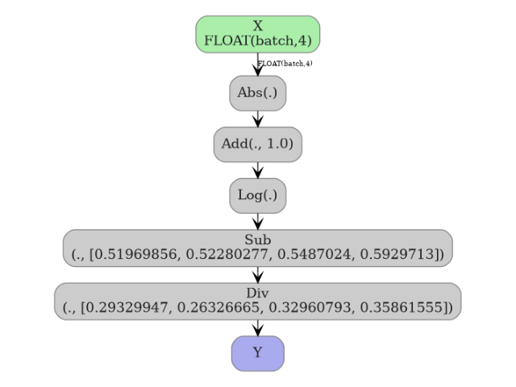

Note
Go to the end to download the full example code.
Exporting FunctionTransformer with numpy tracing#
yobx.sklearn.to_onnx() can convert a
FunctionTransformer that wraps any numpy
function — without writing a custom converter. The conversion works by
tracing: the function is re-executed with lightweight
NumpyArray proxies instead of real arrays. Every
numpy operation performed on those proxies is recorded as an ONNX node, so
the resulting graph exactly mirrors the Python code.
This example covers:
Standalone tracing — converting a plain numpy function directly to an ONNX model via
trace_numpy_to_onnx().FunctionTransformer — converting a fitted
FunctionTransformerwithyobx.sklearn.to_onnx().Pipeline — embedding the transformer in a
Pipelinewith a downstream scaler.
See Numpy-Tracing and FunctionTransformer for a detailed explanation of the tracing mechanism.
import numpy as np
import onnxruntime
from sklearn.pipeline import Pipeline
from sklearn.preprocessing import FunctionTransformer, StandardScaler
from yobx.doc import plot_dot
from yobx.sklearn import to_onnx
from yobx.sql import trace_numpy_to_onnx
1. Standalone tracing with trace_numpy_to_onnx#
The simplest entry point is trace_numpy_to_onnx().
Pass the function and a representative sample array; only the dtype
and shape of the sample are used — the actual values are ignored.
def normalize_rows(X):
"""Divide each row by its L2 norm (safe against zero rows)."""
norms = np.sqrt(np.sum(X**2, axis=1, keepdims=True))
norms = np.where(norms < np.float32(1e-8), np.float32(1), norms)
return X / norms
rng = np.random.default_rng(0)
X_sample = rng.standard_normal((10, 4)).astype(np.float32)
onx_standalone = trace_numpy_to_onnx(normalize_rows, X_sample)
print("Nodes in the standalone ONNX model:")
for node in onx_standalone.graph.node:
print(f" {node.op_type}")
Nodes in the standalone ONNX model:
Pow
ReduceSum
Sqrt
Less
Where
Div
Verify numerical correctness against numpy:
ref = onnxruntime.InferenceSession(
onx_standalone.SerializeToString(), providers=["CPUExecutionProvider"]
)
X_test = rng.standard_normal((5, 4)).astype(np.float32)
(onnx_out,) = ref.run(None, {"X": X_test})
numpy_out = normalize_rows(X_test)
print("\nMax absolute difference (standalone):", np.abs(onnx_out - numpy_out).max())
assert np.allclose(onnx_out, numpy_out, atol=1e-5), "Mismatch in standalone model!"
print("Standalone tracing ✓")
Max absolute difference (standalone): 5.9604645e-08
Standalone tracing ✓
2. Converting a FunctionTransformer#
yobx.sklearn.to_onnx() uses the same tracing machinery automatically
when it encounters a FunctionTransformer.
The func is traced into the same ONNX graph — no sub-model
inlining is needed.
def log1p_abs(X):
return np.log1p(np.abs(X))
transformer = FunctionTransformer(func=log1p_abs)
transformer.fit(X_sample)
onx_ft = to_onnx(transformer, (X_sample[:1],))
print("\nNodes in the FunctionTransformer ONNX model:")
for node in onx_ft.graph.node:
print(f" {node.op_type}")
ref_ft = onnxruntime.InferenceSession(
onx_ft.SerializeToString(), providers=["CPUExecutionProvider"]
)
(onnx_ft_out,) = ref_ft.run(None, {"X": X_test})
sklearn_ft_out = transformer.transform(X_test).astype(np.float32)
print(
"\nMax absolute difference (FunctionTransformer):", np.abs(onnx_ft_out - sklearn_ft_out).max()
)
assert np.allclose(
onnx_ft_out, sklearn_ft_out, atol=1e-5
), "Mismatch in FunctionTransformer model!"
print("FunctionTransformer ✓")
Nodes in the FunctionTransformer ONNX model:
Abs
Add
Log
Max absolute difference (FunctionTransformer): 5.9604645e-08
FunctionTransformer ✓
3. Identity transformer (func=None)#
When func=None the transformer is an identity operation.
The converter emits a single Identity ONNX node.
identity_tf = FunctionTransformer(func=None)
identity_tf.fit(X_sample)
onx_id = to_onnx(identity_tf, (X_sample[:1],))
print("\nNodes in the identity transformer ONNX model:")
for node in onx_id.graph.node:
print(f" {node.op_type}")
ref_id = onnxruntime.InferenceSession(
onx_id.SerializeToString(), providers=["CPUExecutionProvider"]
)
(onnx_id_out,) = ref_id.run(None, {"X": X_test})
assert np.allclose(onnx_id_out, X_test, atol=1e-6), "Identity mismatch!"
print("Identity transformer ✓")
Nodes in the identity transformer ONNX model:
Identity
Identity transformer ✓
4. Embedding in a Pipeline#
The traced operations land directly in the surrounding ONNX graph, so the full pipeline produces a single flat ONNX model.
pipe = Pipeline([("func", FunctionTransformer(func=log1p_abs)), ("scaler", StandardScaler())])
X_train = rng.standard_normal((80, 4)).astype(np.float32)
pipe.fit(X_train)
onx_pipe = to_onnx(pipe, (X_train[:1],))
print("\nNodes in the pipeline ONNX model:")
for node in onx_pipe.graph.node:
print(f" {node.op_type}")
ref_pipe = onnxruntime.InferenceSession(
onx_pipe.SerializeToString(), providers=["CPUExecutionProvider"]
)
(onnx_pipe_out,) = ref_pipe.run(None, {"X": X_test})
sklearn_pipe_out = pipe.transform(X_test).astype(np.float32)
print("\nMax absolute difference (Pipeline):", np.abs(onnx_pipe_out - sklearn_pipe_out).max())
assert np.allclose(onnx_pipe_out, sklearn_pipe_out, atol=1e-5), "Pipeline mismatch!"
print("Pipeline ✓")
Nodes in the pipeline ONNX model:
Abs
Add
Log
Sub
Div
Max absolute difference (Pipeline): 2.3841858e-07
Pipeline ✓
5. Visualize the pipeline graph#
plot_dot(onx_pipe)

Total running time of the script: (0 minutes 0.493 seconds)
Related examples


Float32 vs Float64: precision loss with PLSRegression